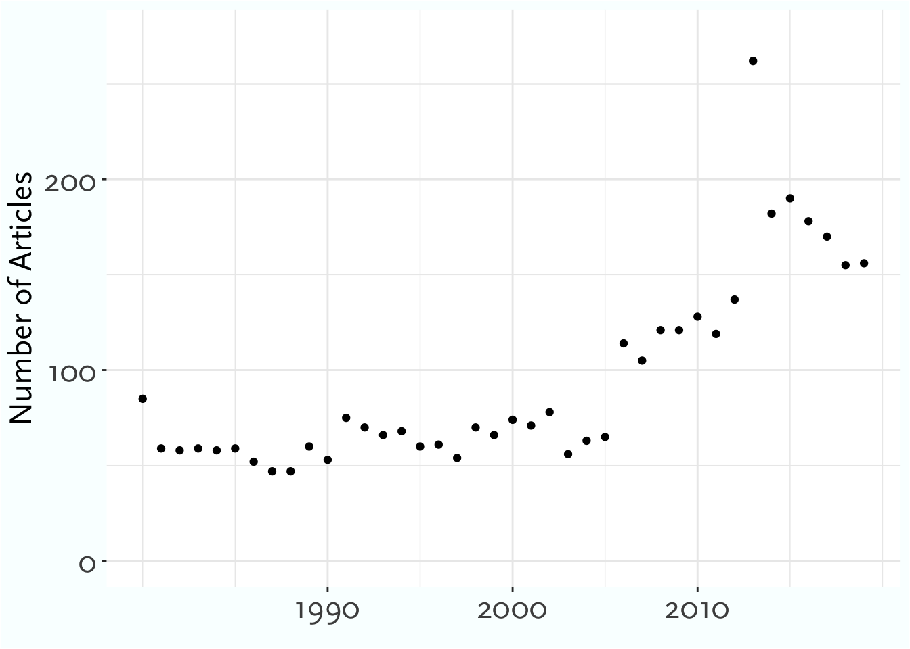
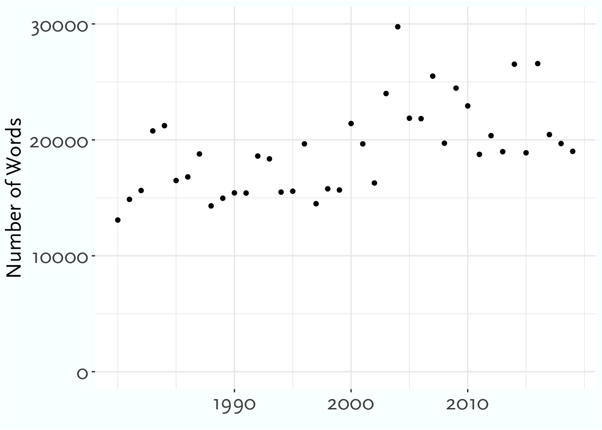
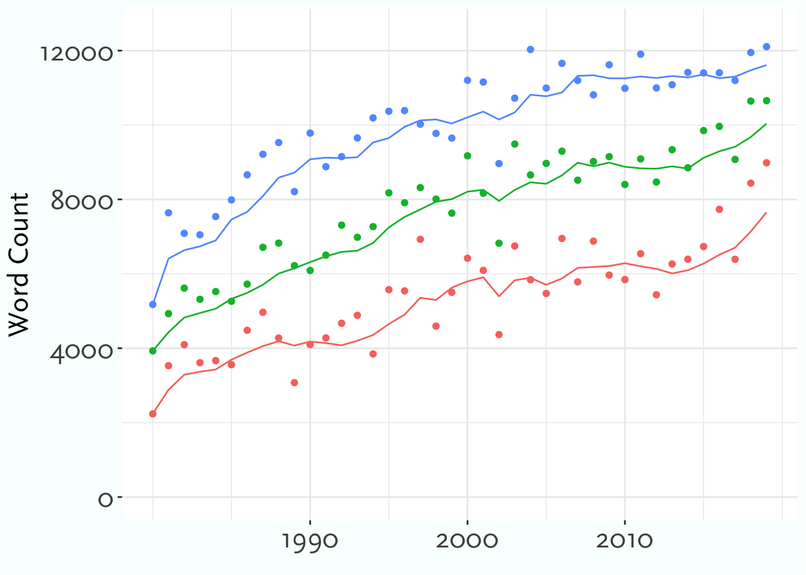
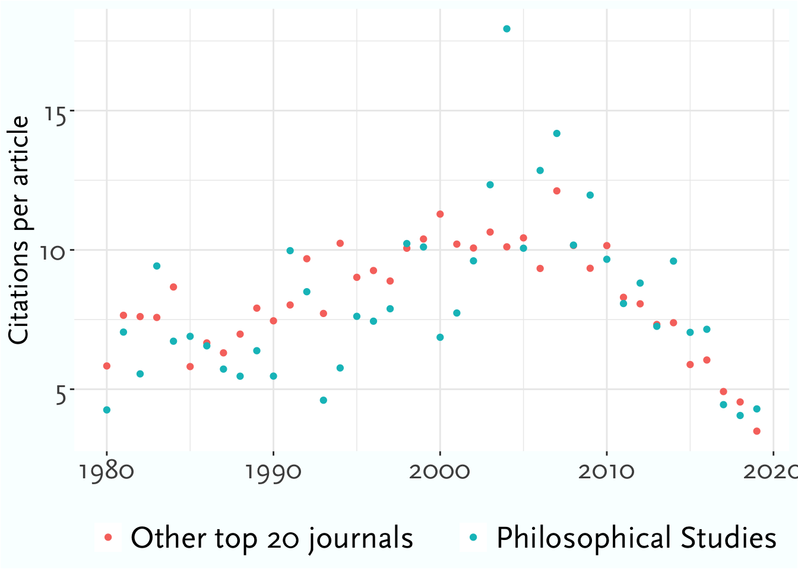
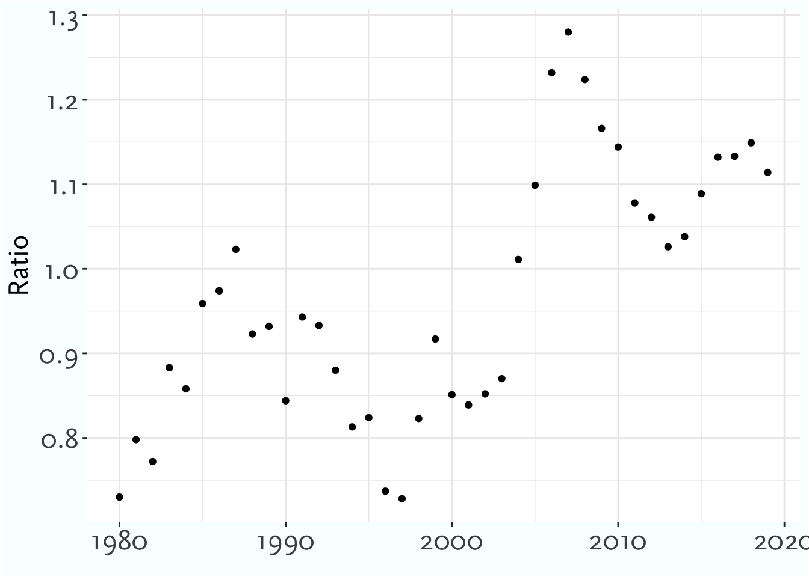
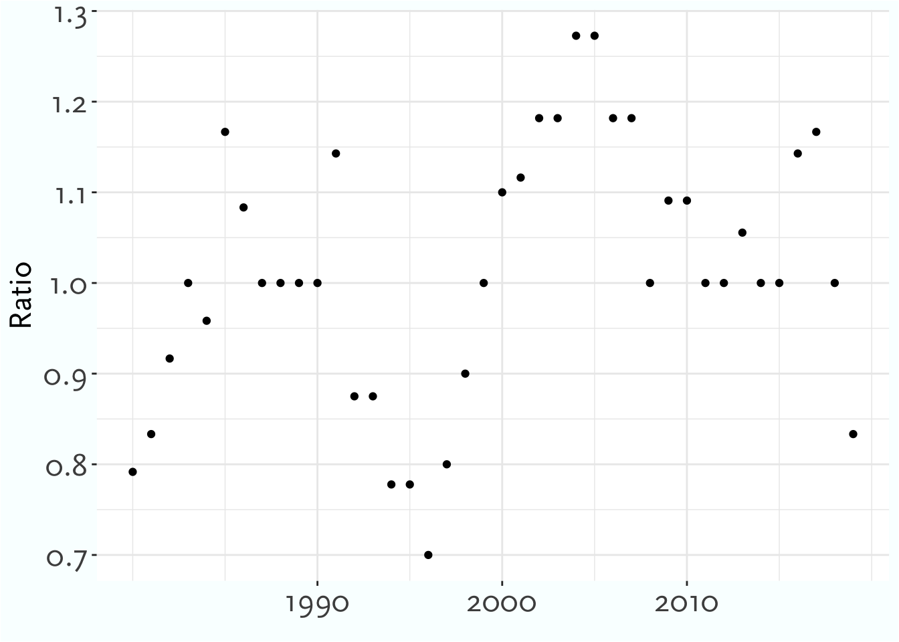
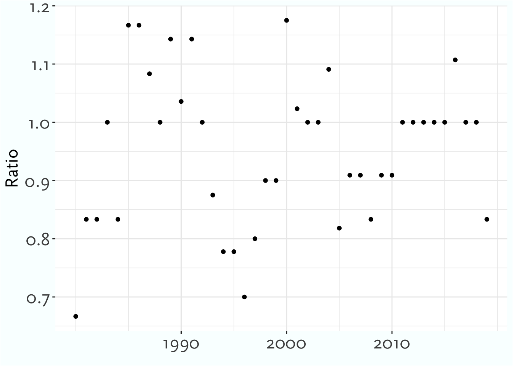

Trends in Philosophical Studies
history of analytic
unpublished
in progress
Abstract
Philosophical Studies has become one of the most important journals for work in several large topics in philosophy. This paper uses data from the word distributions in those papers, and the citations of the papers, to look at how it has changed over time, and how it became so central.
1 Introduction
Philosophical Studies is the most cited journal in other philosophy journals in recent times, so it is worthy of study both in its own right, and as a mirror of broader trends in philosophy. This paper mixes two techniques, topic modeling and citation analysis, to look at the nature of Philosophical Studies, and how it has changed over time, from 1980 to 2019.
In the first half of the paper, I look at the growth the citation rate (i.e., number of citations per article) in Philosophical Studies. If we take its peers to be the twenty philosophy journals with the highest citation rates over the last forty years, it has gone from having a citation rate 10-20 percent below the average, to a rate 10-20 percent above the average. And it’s done this despite increasing its publication volume, which one would normally expect to decrease citation rate. This is explained in part by the move to publishing more special issues, with the special issues from the Bellingham Summer Philosophy Conference being particularly important, and in part by the topic mix in Philosophical Studies changing in ways that prefigured changes in the broader philosophical community.
This leads to the second half of the paper, on just how the topic mix of the journal changed over the years. The short version of those changes is shown in ?@fig-five-topics.
In the late twentieth century, Philosophical Studies was focussed on philosophy of language, and in particular on core analytic questions about reference and description. These were central to philosophy in the 1970s after Naming and Necessity, and stayed central to graduate education at top schools well into the twenty-first century. But the focus of other journals moved away from these questions possibly a bit earlier than Philosophical Studies did.
After the turn of the century, the journal moved into two topics that did not hurt its citation rates. First, it was part of the enormous discussion on epistemology, and in particular on contextualism in epistemology, in the 2000s. Second, in the 2010s, it, along with much of the rest of the discipline, moved more strongly into social philosophy.
One notable way in which Philosophical Studies bucked a trend in philosophy is that it did not move heavily into work on grounding. As you can see in ?@fig-five-topics, this wasn’t because it moved away from metaphysics more broadly. But is has, more than most journals, resisted the turn to what Ted Sider (2020) calls ‘postmodal metaphysics’.
2 Overview
2.1 Editorial History
Philosophical Studies was founded by Herbert Feigl and Wilfrid Sellars, both then at the University of Minnesota, in 1950, as the “first American journal expressly devoted to analytic philosophy” (DeVries 2005, 1–2). They stayed as editors until Feigl’s retirement in 1971, though after 1954 Sellars was listed as the first editor. At Feigl’s retirement the journal moved from the University of Minnesota Press to Reidel, where it has stayed ever since.1 Sellars edited the journal alone until Keith Lehrer was brought on as associate editor in 1974, starting an association with the journal that would last nearly half a century.
1 Springer is the current continuant of Reidel after several mergers and takeovers.
In 1975 Lehrer, who had just moved from Rochester to Arizona, became editor. He stayed in that role until 1982, having been joined by John Pollock (also at Arizona) in 1979. From 1982, Pollock was Editor-in-Chief, and Lehrer went back to being Associate Editor.
In 1992 the journal moved 100 miles up I-10, as Stewart Cohen, then at Arizona State, took over as Editor.2 Cohen stayed as editor through the rest of the time covered in this study, eventually being an editor of the journal for longer than even Wilfrid Sellars.
2 While the journal was at Arizona, at grad student assistant was recognised on the title page as an editorial assistant. Many prominent philosophers had this role over the years, including, in 1983, Stewart Cohen.
Thomas Blackson joined as book symposium editor in 2003. In 2010, Cohen moved to the University of Arizona, and so the journal was edited out of Tuscon for a second time. Jennifer Lackey and Wayne Davis, who would eventually take over from Cohen, joined as Associate Editors in 2014. In 2016 Cohen was made Editor-in-Chief, while Davis and Lackey became Editors, and that was the arrangement that persisted through 2019, the end of the focus of this paper.
There are three things about this editorial history that will become important in what follows. One is that the names here include several of the most important epistemologists of the last half century. A second is that the journal has had a very stable editorial history; a summary like this for most other peer journals would take twice as long to write. And the third is that the biggest single change, the transition from John Pollock to Stewart Cohen as Editor in 1992, does not seem to have had an immediate impact on the journal. You see dramatic changes straight away at Mind when G. E. Moore takes over in 1921, and again when Gilbert Ryle takes over in 1947.3 The effects of the switch from Pollock to Cohen are much more delayed.
2.2 Articles
Philosophical Studies increased its output considerably when it moved to Reidel, and then increased it again between 1980 and 2019. Figure 1 shows how many articles Philosophical Studies has published each year; Figure 2 shows the total word count for the journal each year; Figure 3 shows the count of the longest article each year; and Figure 4 shows the 25th, 50th, and 75th percentile article by word count for each year.



Some of these changes reflect wider disciplinary changes, but others do not. Most journals have a much more stable publication rate, though there is more variation in commercially published journals. Articles have been getting longer all across philosophy. What’s striking here is the 25th percentile rising to over 8000 words by the end of the 2010s.
It used to be common for philosophy colloquia to include papers that were read out by the author. This was a bad practice, and it’s been mostly gone for several years. But starting in the mid-2010s it became an impractical practice. No one was writing papers that even could be read out in the length of a typical colloquium slot.
Everything I’ve said so far is about articles in Philosophical Studies. As I’ll go over in Section 3.2, this is a less clear category than we might like. To get to why that’s so, I’ll first go over the sources I’m using.
2.3 Special Issues
Philosophical Studies has had many special issues, especially since the mid-1990s. These fall into four main categories. The first three are papers from three long-running conferences that Philosophical Studies published selected papers from:
- The APA Pacific Divsion
- The Oberlin Colloquium
- The Bellingham Summer Philosophy Conference (BSPC)
The fourth is a less unified set of one-off issues, either on a special topic, or, in two cases, conferences that Philosophical Studies published once but did not continue with. I’ll call all of these One-off issues.
Often these were double, or occasionally triple, issues. I’m counting these as 2, or 3, issues, because provides a better sense of what proportion of the papers in a year are from special issues. As Table 1 shows, the special issues become a big part of what Philosophical Studies does in the 1990s.
| Type | 1980s | 1990s | 2000s | 2010s |
|---|---|---|---|---|
| Normal | 62 | 79 | 111 | 107 |
| One-off | 4 | 14 | 13 | 10 |
| APA Pacific | 0 | 18 | 12 | 10 |
| Oberlin | 0 | 6 | 5 | 4 |
| BSPC | 0 | 0 | 8 | 5 |
The special issues differ from the normal issues in some striking ways, so it will be helpful to keep their presence in mind.
3 Methods
3.1 Sources
The studies here are primarily based on two sources: citation data from Web of Science, and word lists from JSTOR.
Through [University X] I downloaded the Web of Science (hereafter, WoS) Core Collection in XML format. Within it, I selected 100 prominent philosophy journals that WoS indexes. The journals I selected are, like Philosophical Studies primarily English-language, analytic philosophy journals. I filtered the citations for just citations from and to those 100 journals. WoS has a special way of recording citations in indexed articles to other articles that it has indexed. These records are easy to extract, and are considerably more reliable than citation records in general.4 What follows uses just those citations. So it is citations from indexed journals to indexed journals, where WoS recognised that both the cited and citing journal were in its database.
4 That’s not to say they are perfect. They certainly have false negatives, especially when there are any errors in the original citation. As Petrovich (2024, 77n10) notes, they are more reliable when the citations are in a bibliography than when they are in footnotes. They also do badly with supplements. So for this study I’ve excluded all the supplemenmts to Noûs, i.e., those issues of Philosophical Perspectives and Philosophical Issues which were listed as supplements to Noûs. I did include the supplemental issue Philosophical Studies issued in 2013, because the data there looked reliable enough.
This is obviously a small subset of all citations. It excludes citations in academic journals in other fields, in books and edited volumes, and in many other places that Google Scholar indexes, such as dissertations, lecture notes, slides, and draft manuscripts. Losing that information is a cost, but there are three large upsides. First, these citations are much more accurate. Second, we can be more confident that our data set is relatively complete; finding a full list of philosophy journals is easier than finding a full list of edited volumes in philosophy. Third, by looking at citations internal to philosophy, we can get a sense of philosophy’s self-image, and how it changes over time.
The downloadable citation data is not particularly up to date. I am including citations beyond 2019, because it’s helpful to get a sense of how some of these articles have been received in more recent years. But the data I have only goes through mid-2022. I’ll often simply say 2022; but note that even that year is incomplete.
The other source I used is JSTOR, and in particular the Data for Research (DfR) program that they provide through their Constellate project. This lets you download lists of the words used in various journal articles, along with a count of how often each word is used.5 It also provides word counts for the articles, which I have used in Section 2. The words an author uses are a pretty good guide to what they are talking about; if the word ‘denotation’ is used frequently, it’s probably a philosophy of language article.
5 It also provides bigrams and trigrams, which I’ve occasionally used.
3.2 Articles?
I said I’m talking about articles here, but what exactly is an article? A more helpful question is, which things that philosophy journals publish are not articles?
Some things are easy. The table of contents is not an article. Nor is a correction, or a report on editorial change. Book reviews are not articles. If they were, Philosophical Review would have the lowest rate of citations per article, not the highest. Both WoS and JSTOR also distinguish articles from discussion notes, especially if the journal has a designated discussions section. Without this distinction, Mind would have a much lower rate of citations per article.
Both of these last two categories are relevant to Philosophical Studies, even though it does not run book reviews or have designated discussion sections. They are relevant because it has many book symposia. The classifiers, WoS and JSTOR, struggle with how to classify articles in these symposia. They disagree with each other, and with their own past practice.
I have some sympathy for the classifiers; these are really borderline cases. Mostly what they settled on was that the précis and replies by the book author are not articles, and that the contributions by commentators are. But they did not stick precisely to this.
For the most part, I’ve gone with WoS’s classifications. It would be practical, just barely, to go through Philosophical Studies issue by issue and reclassify the book symposium entries so all and only the commentaries are articles. But it would not be practical to do this for all one hundred journals. And for this paper, we’re mostly interested in comparing articles in Philosophical Studies with articles in other journals, so it’s best to not modify only one journal.
There is one place we’re I’ve overridden WoS’s classifications. It has categories of Discussion, Note, and Review, each of which is about 0.75% of the articles across the 100 journals. The three categories include similar enough articles that I’ll treat them as a unified category. Mostly these are discussion notes, or longer book reviews, that we want to exclude. But, especially in Philosophical Review, they occasionally put ordinary articles here. So important articles by Stanley Cavell (1962), Jonathan Schaffer (2010), and Harvey Lederman (2022) all got listed as not being articles.6 I’ve counted any piece in these three categories 20 pages or longer as an article.
6 The Cavell article was in the discussion section of the January 1962 issue of the Review, so this classification is understandable. The other two are not.
7 If these aren’t articles, what are they? WoS calls Egan’s paper ‘Editorial-Matter’. That’s wrong, but I’m not sure what I would say in their position.
There is one last tricky category to flag. The special issues on the Oberlin Colloquium sometimes include commentaries on the main articles. These are mostly not counted as articles, and I think rightly so. Occasionally, as when Andy Egan (2011) was the commentator on an important paper by Tamar Szabò Gendler (2011), the commentary gets a reasonable number of citations. But mostly these commentaries are rarely if ever cited, and I think they aren’t really what most people think of as journal articles. So I’ve been happy to exclude them.7
4 Outbound Citations
4.1 Overview of Citations
Articles in Philosophical Studies get cited a lot. Table 2 shows the five journals with the largest number of citations of articles published between 1980 and 2019 in the 100 journals we’re looking at.
| Journal | Citations |
|---|---|
| Philosophical Studies | 30424 |
| Synthese | 23280 |
| Journal Of Philosophy | 20023 |
| Noûs | 19716 |
| Philosophy Of Science | 18810 |
Philosophical Studies is in first place on that list in part, but only in part, because it publishes so much. Table 3 lists the top five journals by the number of articles they have published.
| Journal | Articles |
|---|---|
| Synthese | 4525 |
| Philosophical Studies | 3776 |
| Journal Of Medical Ethics | 3518 |
| Journal Of Symbolic Logic | 3283 |
| Analysis | 2236 |
Synthese has 20% more articles, but 25% fewer citations. The other three journals on Table 3 are somewhat special cases. Two of them get a lot of citations outside of philosophy, and this is only a study of citations in philosophy journals. Analysis only publishes short papers, and so while they get a lot of citations per page, they don’t get as many citations per article as other journals.8
8 Recall that in Section 3.2 I noted that some Analysis style papers in other journals are not even counted because they are classified as Discussions or Notes, not Articles. These excluded articles are cited at much lower rates than the typical Analysis article.
Still, we’d expect on general principles that raw volume of publication wouldn’t make a big difference. Citations tend to follow something like a log-normal distribution (Brzezinski 2015). The bulk of the citations come from a handful of highly cited articles. Publishing more articles helps, but is no guarantee.
If we look not at total citations, but at citations per article as in Table 4, we get a list that looks a bit more like a familiar ranking of philosophy journals by prestige.
| Rank | Journal | Articles | Citations | Citation Rate |
|---|---|---|---|---|
| 1 | Philosophical Review | 510 | 14706 | 28.84 |
| 2 | Journal Of Philosophy | 1221 | 20023 | 16.40 |
| 3 | Philosophy & Public Affairs | 521 | 8277 | 15.89 |
| 4 | Mind | 1071 | 14391 | 13.44 |
| 5 | Ethics | 1045 | 13040 | 12.48 |
| … | ||||
| 13 | Philosophy And Phenomenological Research | 2165 | 17737 | 8.19 |
| 14 | Philosophical Studies | 3776 | 30424 | 8.06 |
I’ve included Philosophy and Phenomenological Research there because, like Philosophical Studies, it publishes many book symposia. And, like Philosophical Studies, the articles in these symposia are typically not cited very much.
4.2 Large Trend
There is a striking step-change in citations to Philosophical Studies that occurred in the mid-2000s. Cross-temporal comparisons of citations are hard because changes in the number of journals, the number of articles in those journals, and citation norms, make most comparisons tricky. To try to screen off some of that noise, I’ll mostly compare citations to articles published in Philosophical Studies to citations to other articles published at the same time.
In particular, in this section I’ll compare Philosophical Studies to a list of nineteen other prominent philosophy journals. From the one hundred journals that I’m primarily looking at, I selected the twenty that have the highest rate of citations per published article, and which Web of Science has indexed every year since 1980.9 That list includes Philosophical Studies, and the other nineteen journals are the comparison class.
9 The last constraint notably rules out Philosophers’ Imprint and Mind and Language.
Figure 5 shows, for each year from 1980 to 2019, the average number of citations for articles published in Philosophical Studies (in blue), and in the other nineteen (in red). The figure is fairly noisy, but some trends are clear. Before 2000, the red dots, for the other journals, are mostly above the blue dots, for Philosophical Studies. After 2000, and especially from 2003 onwards, that is mostly reversed. Despite having less time to accrue citations, articles from the 2000s are cited more, on average, than articles published earlier. But articles published in the 2010s, especially the late 2010s, have many fewer cites largely because they haven’t been around as long.

Figure 6 smooths out some of the noise in Figure 5 in two ways. First, instead of measuring average citations per year, I measure average citations over a five-year rolling window. This doesn’t make a huge difference to the measure for the other nineteen, which is already fairly smooth, but it is useful for smoothing the values for just one journal. Second, instead of showing the red and blue dots separately, I’ve just displayed the ratio between them.

The difference in Figure 6 between the earlier and recent years is striking. By this one measure, citations per article, Philosophical Studies was doing ok before 2003, but was towards the lower end of the top 20 journals. After 2003, it is doing better than the average journal in the top 20.
My very anecdotal impression is that Philosophical Studies is viewed as being more prestigious by younger philosophers than by older philosophers. A toy model of prestige, where it is heavily anchored to how often a journal was cited when one was in graduate school, would explain that difference. That said, I have not done (and am not going to do) a careful study of comparative prestige judgments to know if there is even an effect here to find, or whether my informal sample was not reflective of the wider population.
4.3 Means, Medians and Quartiles
In some ways looking at the averages here understates the impact of Philosophical Studies in the 2000s. Average numbers of citations can be very misleading. Table 5 compares five year periods from two journals: the Australasian Journal of Philosophy (AJP) from 1980-1984, and Philosophical Studies (PS) from 2003-2007. Q1, Q2 and Q3 are the 25th, 50th, and 75th percentile citations, and Mean is the average number of citations.
| Statistic | AJP 1980-1984 | PS 2003-2007 |
|---|---|---|
| Q1 | 0.0 | 2.0 |
| Q2 | 2.0 | 5.0 |
| Q3 | 7.0 | 14.0 |
| Mean | 16.7 | 13.5 |
The mean number of citations per article is higher for AJP 1980-1984 than for Philosophical Studies 2003-2007. But that’s because of the 1892 citations to articles from the AJP in those years, 1269 of them are to five articles by David Lewis. The citations to Philosophical Studies are much more widely spread around. Comparing the 75th percentiles is more indicative of what’s being published in the journals.
Part of the difference between AJP 1980-1984 and Philosophical Studies 2003-2007 is a general trend in the discipline to spread around the citations more. But it’s not just that. Philosophical Studies stands out for how widely spread around its citations are. Figure 7 shows this. I’ve taken the same 19 journals that I used in Figure 6, and calculated the same quartile statistics for Philosophical Studies, and for those 19 journals collectively, for five-year moving windows each year from 1980 to 2019. The results are shown in Figure 7. Note that the dot for each year is really the five-year window centrered on that year.

The pattern is rather similar to Figure 6. Before 2000, the ratio was below one for 11 out of 20 years. After 2000, the only time it is below one is right at the end, where the data is very noisy. (The citation counts are very low for such recently published articles, so it’s hard to read too much into the numbers.) There is a particular peak in the mid-2000s, just as in Figure 6. Perhaps the biggest difference is that in the 1980s, the ratio of the means was below one, but the ratio of the 75th percentiles is sometimes above one. The explanation for that is that there were very few Philosophical Studies articles from those years with huge citation counts, even though a quarter of the articles were being fairly frequently cited.
4.4 Citations of Special Issues
Part of the explanation of the pattern in Figure 6 and Figure 7 is that the special issues that Philosophical Studies published in the 2000s were very heavily cited. Table 6 shows three summary statistics, mean, median, and 75th percentile (Q3), for the normal Philosophical Studies issues, and for the four classes of special issues. Table 7 shows the means for the five classes over each of the four decades from 1980-2019. (The blank cells mean that there aren’t any special issues of that type that decade.)
| Type | Median | Q3 | Mean |
|---|---|---|---|
| BSPC | 12 | 39 | 22.0 |
| Oberlin | 4 | 12 | 15.6 |
| One-off | 4 | 12 | 11.0 |
| APA Pacific | 2 | 7 | 7.4 |
| Normal | 3 | 8 | 7.1 |
| Type | 1980s | 1990s | 2000s | 2010s |
|---|---|---|---|---|
| Normal | 6.2 | 7.1 | 9.3 | 6.5 |
| One-off | 8.7 | 12.9 | 14.2 | 8.6 |
| APA Pacific | 4.7 | 14.6 | 5.3 | |
| Oberlin | 16.5 | 19.2 | 13.0 | |
| BSPC | 27.7 | 16.7 |
The numbers for BSPC are particularly striking. In the full set of articles I’m working from, i.e., all the indexed articles from 100 journals, only 1.1% of articles have 39 or more citations. But one quarter of the articles that Philosophical Studies published from BSPC are in that 1.1%. Surprisingly, given the numbers here, none of the 10 most cited articles in Philosophical Studies, and only one of the 30 most cited articles, was from a BSPC special issue. The high average isn’t being caused by outliers, but many BSPC articles being cited very frequently. By contrast, four of the ten most cited articles were from the Oberlin colloquium. This is why the Q3 numbers for BSPC and Oberlin are so different, even though the means aren’t that far apart.
The fact that the normal issues have such lower citation statistics than the special issues might make us think that the explanation of Figure 6 and Figure 7 can be found entirely in the special issues. Indeed, if we just compare the normal issues of Philosophical Studies to the other 19 journals, the effect we were seeing basically vanishes. This can be seen in Figure 8.

This is surely part of the explanation of what’s going on. But Figure 8 is not an apples-to-apples comparison; we’ve removed the special issues from Philosophical Studies, but not from the other 19. This could be a significant issue. I looked at the most cited article since 2005 in each of the 20 journals that go into Figure 8, and in 6 of them (including Philosophical Studies), the most cited article was in a special issue. Or, in one case, a special unit in a regular issue. It’s really hard to tell exactly which issues are special issues from the archival record, and even harder to tell what the refereeing process was for those special issues.10 The best we can say is that special issues are sufficiently widespread, and sufficiently widely cited, that Figure 8 might be a misleading comparison. The success of special issues is part of why Philosophical Studies was so widely cited in the 2000s, but maybe not all of it.
10 BSPC selected almost all its papers via anonymous review, and then the papers were refereed again before going into Philosophical Studies. I have no idea how common that was for the other special issues.
Rather than go further down this rabbit hole, let’s turn to what was in Philosophical Studies over the years, starting with its inbound citations.
5 Inbound Citatations
This section looks at the papers cited in Philosophical Studies in each of the last four decades. For each decade, I find the 20 papers most cited in all philosophy journals over that decade. (They need not be published in the decade, indeed some of them are published nearly a half-century earlier.) I’ll then look at which of them have the highest and lowest proportion of their citations in Philosophical Studies, and comment on what that tells us about the journal, and the discipline as a whole.
5.1 1980s
| Rank | Citation | PS Citations | All Citations | Percent |
|---|---|---|---|---|
| 1 | Lewis (1979b) | 8 | 36 | 22.22% |
| 2 | Perry (1979) | 13 | 59 | 22.03% |
| 3 | Lewis (1979a) | 7 | 34 | 20.59% |
| 4 | Perry (1977) | 6 | 33 | 18.18% |
| 5 | Donnellan (1966) | 9 | 55 | 16.36% |
| … | ||||
| 16 | Castañeda (1967) | 2 | 38 | 5.26% |
| 17 | Frankfurt (1971) | 3 | 68 | 4.41% |
| 18 | Grice (1957) | 1 | 36 | 2.78% |
| 19 | Dennett (1971) | 0 | 30 | 0.00% |
| 20 | Rawls (1980) | 0 | 49 | 0.00% |
Philosophical Studies was founded to be a journal of analytic philosophy. There wasn’t a mission statement in the first edition, but the very first article might have served just as well. It was an article on analysis, by Morris (Weitz1950?), which starts with a reference to Language, Truth and Logic.
In the 1980s, the focus is still very much on core analytic concerns. The five articles at the top of Table 8 are all in philosophy of language, broadly enough construed. That was obviously a big part of philosophy as a whole in the 1980s, but these articles were being cited in Philosophical Studies at a higher rate than in the rest of the discipline.
The bottom of Table 8 says more about the noisiness of the data than about the journal. The Dennett paper was cited in Lormand (1985), but the citation was to the reprint in Brainstorms not the original journal article, so it isn’t captured here. The Rawls paper is cited in Post (1984), with a slightly different title.11 I wouldn’t read much into that part of the table.12
11 The Rawls paper was in three parts, and WoS thought the parts were papers, and the title was the issue title, so the citations to it are particularly unreliable.
12 I found these citations with Google Scholar, which has several false positives, but does track down some very hard to find citations.
5.2 1990s
| Rank | Citation | PS Citations | All Citations | Percent |
|---|---|---|---|---|
| 1 | Perry (1979) | 13 | 62 | 20.97% |
| 2 | Kim (1984) | 13 | 74 | 17.57% |
| 3 | Donnellan (1966) | 8 | 46 | 17.39% |
| 4 | Lewis (1983) | 10 | 66 | 15.15% |
| 5 | Jackson (1982) | 8 | 63 | 12.70% |
| … | ||||
| 16 | Millikan (1989) | 2 | 39 | 5.13% |
| 17 | Goldman (1976) | 2 | 44 | 4.55% |
| 18 | Dworkin (1981) | 1 | 40 | 2.50% |
| 19 | Rawls (1985) | 1 | 40 | 2.50% |
| 20 | Cummins (1975) | 1 | 53 | 1.89% |
The top of Table 9 still has a fair bit of philosophy of language, though we’re now seeing more metaphysics (Lewis), more philosophy of mind (Jackson), and in particular more metaphysics of mind (Kim).
The bottom of Table 9 brings out something that we’ll see a lot more going forward. Philosophical Studies does a lot less political philosophy (Dworkin, Rawls), and less philosophy of science (Millikan, Cummins) than the rest of the discipline.
There is one very odd entry there though: why are there so few citations to Goldman? We’ll come back to this in later sections, but it stands out given how central epistemology is about to become to the journal.
5.3 2000s
| Rank | Citation | PS Citations | All Citations | Percent |
|---|---|---|---|---|
| 1 | DeRose (1995) | 25 | 135 | 18.519% |
| 2 | Goldman (1976) | 13 | 71 | 18.310% |
| 3 | Lewis (1996) | 29 | 166 | 17.470% |
| 4 | Lewis (1979b) | 13 | 76 | 17.105% |
| 5 | Lewis (1983) | 18 | 113 | 15.929% |
| … | ||||
| 16 | Kripke (1975) | 5 | 86 | 5.814% |
| 17 | Cohen (1989) | 3 | 89 | 3.371% |
| 18 | Machamer, Darden, and Craver (2000) | 3 | 92 | 3.261% |
| 19 | Anderson (1999) | 1 | 81 | 1.235% |
| 20 | Cummins (1975) | 1 | 83 | 1.205% |
The story in Table 10 is the centrality of epistemology to what Philosophical Studies does in the 2000s. And in particular, it is the story of the centrality of epistemic contextualism to the journal. The two most important articles on contextualism are cited in Philosophical Studies more than 25 times in this decade alone, which is quite remarkable.
I think the three most important figures in the development of epistemic contextualism are Keith DeRose, David Lewis, and Stewart Cohen. The first two are on this list, and the third was editor of the journal through the 2000s. There are cases in the history of philosophy where a journal editor was cited more often in his journal than in the broader discipline.13 This isn’t what happened here. Cohen’s own papers are cited in Philosophical Studies at roughly the same rate as they are cited in peer journals. What does happen is that a topic Cohen works on, and which is being discussed a lot throughout philosophy, is discussed even more here.
13 I use a male pronoun here because the editors I know of that fit this description were all male.
The bottom of Table 10 continues a pattern we’ve seen already. Philosophical Studies does less political philosophy (Cohen, Anderson), and less philosophy of science (Cummins, Machamer et al) than similar journals.
5.4 2010s
| Rank | Citation | PS Citations | All Citations | Percent |
|---|---|---|---|---|
| 1 | Kolodny (2005) | 34 | 154 | 22.0779% |
| 2 | Schaffer (2010) | 38 | 179 | 21.2291% |
| 3 | Pryor (2000) | 47 | 228 | 20.6140% |
| 4 | Lewis (1996) | 36 | 227 | 15.8590% |
| 5 | Frankfurt (1969) | 39 | 246 | 15.8537% |
| … | ||||
| 16 | Perry (1979) | 12 | 154 | 7.7922% |
| 17 | Singer (1972) | 9 | 204 | 4.4118% |
| 18 | Clark and Chalmers (1998) | 9 | 241 | 3.7344% |
| 19 | Anderson (1999) | 6 | 186 | 3.2258% |
| 20 | Machamer, Darden, and Craver (2000) | 8 | 279 | 2.8674% |
There are three related stories at the top of Table 11. The first is the appearance for the first time of ethics articles (Kolodny, Frankfurt) at the top of one of these lists. The second is the much broader spread of topics represented than in previous decades. And the third is the broader spread of years represented, with 41 years between the earliest and latest publication on the list.
There isn’t much new at the bottom of the list, with once again the most cited philosophy of science article of the last quarter century, and the most cited political philosophy of the last quarter century, trailing the pack. It is perhaps an interesting reflection on how the journal has changed to see “The Problem of the Essential Indexical”, which was near the top of Table 8 and Table 9, be near the bottom of Table 11.
5.5 Summary
Just looking at the citations of very widely cited articles is a fairly crude measure. In subsequent sections we’ll use topic models, and citations of clusters of articles, to make more fine-grained measurements of what was going on in the journal. But these more sophisticated approaches have a downside: they are black boxes, and it is tricky to independently confirm what they say. Counting citations of a handful of articles is much easier. That means that when the more sophisticated approaches say that philosophy of language has become a smaller part of the journal, that ethics has become more important, and that philosophy of science and political philosophy were always relatively small parts of the journal, we have independent reason to believe that they are correct.
6 Comparisons
Articles with highest ratio of PS cites/general cites Articles with lowest ratio of PS cites/general cites Previously I just did that with articles published in PS; that seems wrong
Hmm, this could be complicated. Study: For each decade find 20 most cited, and look at how often they are cited in PS.
For 1980s, the low is 0 for Rawls (1980) and Dennett (1971). But Rawls is cited in Post (1984), under a variant name, and Dennett is cited in Lormond (1985), but to the reprint. Maybe just live with the messiness High five in 1980s are all language, or language-adjacent: Lewis (1979) (both de se and time’s arrow), two Perry papers, and Donnellan
For 1990s, the low is 0 for McDowell’s Virtue and Reason. Is in Brighouse (1990), but the citation is incomplete and uses the wrong year. Oddly the third lowest is for Discrimination and Perceptual Knowledge, only 2/38. And this looks right. The highs in 1990s are still language based, though with metaphysics seeping in (Kim on supervenience, Lewis on Universals)
For 2000s, lows include Cummins (1975) (which is hard to track, such a common name), Anderson (1999), and Mechanisms paper (2000). The highs are very epistemology based - Goldman is among them, and the two big contextualism papers by DeRose and Lewis. Obviously the editor at the time was also a prominent contextualist, but his papers are not cited in the journal at a particularly out of the ordinary rate. (There are many cases in history where editors are cited a lot, but this isn’t one of them.) Just outside top 20, but Jackson and Chalmers has nearly 1/3 its cites in PS. Tracing back to Davies and Humberstone’s original paper. Remarkably, Elusive Knowledge is most cited in the decade; normally this kind of calculation pushes towards less cited, high variance cases.
For 2010s, still mechanisms, Anderson (1999), also Kripke (1975) are the low ones Top 5 is more varied, both in topic and time: Kolodny (2005), Pryor (2000), Lewis (1986), Frankfurt (1969), Jackson (1982). Could be result of publishing more papers, but striking that it’s pulling these older papers in.
7 The LDA
Build the model Note the five categories Graph the trends Flag the methodology
8 Language
Find the 40 most cited in each topic over the 40 years (i.e., most cited per year) Look how often they are cited in PS Look how often they are cited across the 100 See if the trends in PS track wider trends Find other journals that have similar trends (Analysis, PQ, AJP)
9 Metaphysics
Note the two Schaffer papers, and differences in citing Schaffer (2016) Is that because little grounding There is some - see graph of words Maybe just count how ‘modal’ vs ‘postmodal’ the 2019 papers are Maybe do a small LDA of the metaphysics papers
10 Ethics
Is there anything to say here? Does it go more political? Still not citing Anderson, but something?
Delicate. Even happening.
References
Anderson, Elizabeth S. 1999. “What Is the Point of Equality?” Ethics 109 (2): 287–337. https://doi.org/10.1086/233897.
Brzezinski, Michal. 2015. “Power Laws in Citation Distributions: Evidence from Scopus.” Scientometrics 103 (1): 213–28. https://doi.org/10.1007/s11192-014-1524-z.
Castañeda, Hector-Neri. 1967. “Indicators and Quasi-Indicators.” American Philosophical Quarterly 4 (2): 85–100.
Cavell, S. 1962. “The Availability of Wittgenstein’s Later Philosophy.” Philosophical Review 71 (1): 67–93. https://doi.org/10.2307/2183682.
Clark, Andy, and David J. Chalmers. 1998. “The Extended Mind (Active Externalism).” Analysis 58 (1): 7–19. https://doi.org/10.1111/1467-8284.00096.
Cohen, G. A. 1989. “On the Currency of Egalitarian Justice.” Ethics 99 (4): 906–44. https://doi.org/10.1086/293126.
Cummins, Robert. 1975. “Functional Analysis.” Journal Of Philosophy 72 (20): 741–65. https://doi.org/10.2307/2024640.
Dennett, D. C. 1971. “Intentional Systems.” Journal Of Philosophy 68 (4): 87–106.
DeRose, Keith. 1995. “Solving the Skeptical Problem.” Philosophical Review 104 (1): 1–52. https://doi.org/10.2307/2186011.
DeVries, Willem A. 2005. Wilfrid Sellars. Abingdon: Routledge.
Donnellan, Keith S. 1966. “Reference and Definite Descriptions.” Philosophical Review 75 (3): 281–304. https://doi.org/10.2307/2183143.
Dworkin, Ronald. 1981. “What Is Equality? Part 2: Equality of Resources.” Philosophy & Public Affairs 10 (4): 283–345.
Egan, Andy. 2011. “Comments on Gendler’s, ’the Epistemic Costs of Implicit Bias’.” Philosophical Studies 156 (1): 65–79. https://doi.org/10.1007/s11098-011-9803-5.
Frankfurt, Harry G. 1969. “Alternate Possibilities and Moral Responsibility.” Journal Of Philosophy 66 (23): 829–39. https://doi.org/10.2307/2023833.
———. 1971. “Freedom of the Will and the Concept of a Person.” Journal Of Philosophy 68 (1): 5–20.
Gendler, Tamar Szabo. 2011. “On the Epistemic Costs of Implicit Bias.” Philosophical Studies 156 (1): 33–63. https://doi.org/10.1007/s11098-011-9801-7.
Goldman, Alvin I. 1976. “Discrimination and Perceptual Knowledge.” Journal Of Philosophy 73 (20): 771–91. https://doi.org/10.2307/2025679.
Grice, HP. 1957. “Meaning.” Philosophical Review 66 (3): 377–88. https://doi.org/10.2307/2182440.
Jackson, Frank. 1982. “Epiphenomenal Qualia.” Philosophical Quarterly 32 (127): 127–36. https://doi.org/10.2307/2960077.
Kim, Jaegwon. 1984. “Concepts of Supervenience.” Philosophy And Phenomenological Research 45 (2): 153–76. https://doi.org/10.2307/2107423.
Kolodny, Nico. 2005. “Why Be Rational?” Mind 114 (455): 509–63. https://doi.org/10.1093/mind/fzi509.
Kripke, Saul. 1975. “Outline of a Theory of Truth.” Journal Of Philosophy 72 (19): 690–716. https://doi.org/10.2307/2024634.
Lederman, Harvey. 2022. “The Introspective Model of Genuine Knowledge in Wang Yangming.” Philosophical Review 131 (2): 169–213. https://doi.org/10.1215/00318108-9554691.
Lewis, David. 1979a. “Attitudes de Dicto and de Se.” Philosophical Review 88 (4): 513–43. https://doi.org/10.2307/2184843.
———. 1979b. “Counterfactual Dependence and Time’s Arrow.” Noûs 13 (4): 455–76. https://doi.org/10.2307/2215339.
———. 1983. “New Work for a Theory of Universals.” Australasian Journal Of Philosophy 61 (4): 343–77. https://doi.org/10.1080/00048408312341131.
———. 1996. “Elusive Knowledge.” Australasian Journal Of Philosophy 74 (4): 549–67. https://doi.org/10.1080/00048409612347521.
Lewy, C. 1976. “Mind Under G. E. Moore (1921-1947).” Mind 85 (337): 37–46. https://doi.org/10.1093/mind/LXXXV.337.37.
Lormand, E. 1985. “Toward a Theory of Moods.” Philosophical Studies 47 (3): 385–407. https://doi.org/10.1007/BF00355211.
Machamer, Peter, Lindley Darden, and Carl F. Craver. 2000. “Thinking about Mechanisms.” Philosophy Of Science 67 (1): 1–25. https://doi.org/10.1086/392759.
Millikan, Ruth Garrett. 1989. “In Defense of Proper Functions.” Philosophy Of Science 56 (2): 288–302. https://doi.org/10.1086/289488.
Perry, John. 1977. “Frege on Demonstratives.” Philosophical Review 86 (4): 474–97. https://doi.org/10.2307/2184564.
———. 1979. “The Problem of the Essential Indexical.” Noûs 13 (1): 3–21. https://doi.org/10.2307/2214792.
Petrovich, Eugenio. 2024. A Quantitative Portrait of Analytic Philosophy: Looking Through the Margins. Cham: Springer.
Post, JF. 1984. “On the Determinacy of Valuation.” Philosophical Studies 45 (3): 315–33. https://doi.org/10.1007/BF00355441.
Pryor, James. 2000. “The Skeptic and the Dogmatist.” Noûs 34 (4): 517–49. https://doi.org/10.1111/0029-4624.00277.
Rawls, John. 1980. “Kantian Constructivism in Moral Theory.” Journal Of Philosophy 77 (9): 515–35. https://doi.org/10.2307/2025790.
———. 1985. “Justice as Fairness: Political Not Metaphysical.” Philosophy & Public Affairs 14 (3): 223–51.
Schaffer, Jonathan. 2010. “Monism: The Priority of the Whole.” Philosophical Review 119 (1): 31–76. https://doi.org/10.1215/00318108-2009-025.
———. 2016. “Grounding in the Image of Causation.” Philosophical Studies 173 (1): 49–100. https://doi.org/10.1007/s11098-014-0438-1.
Sider, Theodore. 2020. The Tools of Metaphysics and the Metaphysics of Science. Oxford: Oxford University Press.
Singer, Peter. 1972. “Famine, Affluence, and Morality.” Philosophy & Public Affairs 1 (3): 229–43.
Warnock, G. J. 1976. “Gilbert Ryle’s Editorship.” Mind 85 (337): 47–56. https://doi.org/10.1093/mind/LXXXV.337.47.